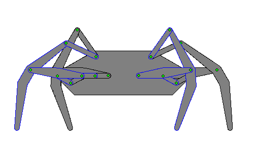

klann linkages revision 3189

Introduction
The Klann linkage is a planar mechanism designed to simulate the gait of legged animal and function as a wheel replacement, a leg mechanism. The linkage consists of the frame, a crank, two grounded rockers, and two couplers all connected by pivot joints. It was developed by Joe Klann in 1994 as an expansion of Burmester curves which are used to develop four-bar double-rocker linkages such as harbor crane booms.[2] It is categorized as a modified Stephenson type III kinematic chain.